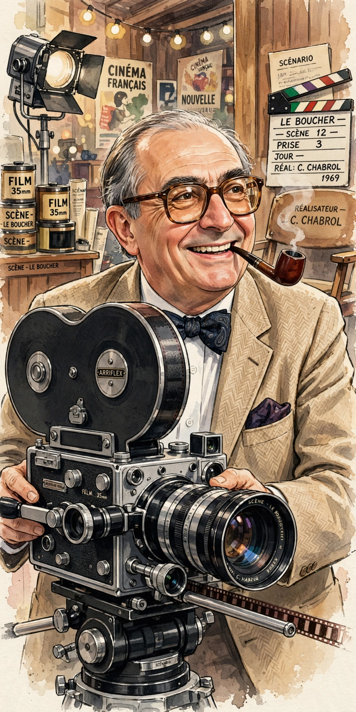

| Claude Chabrol | |
|---|---|
 Chabrol directed more than fifty features | |
| Born | 24 June 1930, Paris, France |
| Died | 12 September 2010 (aged 80), Paris, France |
| Occupation | Film director, critic, producer |
| Known for | Le Beau Serge (1958), Les Cousins (1959), La Cérémonie (1995) |
| Movement | French New Wave |
Claude Henri Jean Chabrol (French: [klod ʃabʁɔl]; 24 June 1930 – 12 September 2010) was a French film director and a member of the French New Wave group of filmmakers who first came to prominence at the end of the 1950s. Like his colleagues and contemporaries Éric Rohmer and Jacques Rivette, Chabrol was a critic for the influential film magazine Cahiers du Cinéma before turning to directing.
Financed by his wife's inheritance, Chabrol made Le Beau Serge (1958), often considered the first film of the French New Wave, followed by Les Cousins (1959), which won the Golden Bear at Berlin. His production company, AJYM Films, also helped finance early works by Rohmer and Rivette.
Chabrol is famous for his suspense thrillers, deeply influenced by Alfred Hitchcock — with whom he shares a taste for murder, guilt, and the hypocrisies of the provincial bourgeoisie. Films such as Le Boucher (1970), La Femme infidèle (1969), and La Cérémonie (1995) dissect respectable families concealing adultery, madness, and crime. A famous bon vivant, he filled his films with elaborate meals and once remarked that he liked to show people "eating and talking — and then someone dies."
With a career spanning five decades and more than fifty features, Chabrol was the most prolific of the New Wave directors, maintaining a steady output of psychologically acute thrillers until his death in 2010.